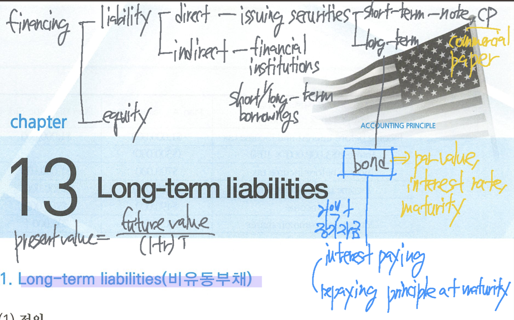

Long-term Liabilities

Long-term liabilities
Long-term liabilities are obligations that are expected to be paid after one year.
types - bonds, long-term notes, lease obligations, etc.
Bond payable
Bonds are contractual agreements wherein the issuer promise to pay the purchaser a principal amount at a designated future date. A form of interest-bearing notes payable issued by corporation, government, etc.
Bond’s advantages over common stock
Stockholder control is not affected - 채권자는 회사 경영활동과 관련된 의결권이 없지만 주주의 통제나 간섭을 받지 않는다.
tax savings result - 이자비용은 배당금과 달리 비용이므로 절세효과가 있다
earnings per share may be higher - 추가적인 주식발행 없이 자본을 조달할 수 있어서 주당순이익의 감소를 가져오지 않는다. 반면, bonds는 매기 반드시 약정된 이자를 지급해야 하며 만기에는 반드시 원금을 상환해야 한다.

PVF - present value factor
PFV-OA 0 present value factor ordinary annuity

Bond payable의 종류
사채발행의 보증유무에 따른 분류
- secured bonds - mortgage bonds, secured by real property
- unsecured bonds - debentured bonds (무담보사채)
복수의 만기여부에 따른 분류
- term bonds - mature at a single specified future date
- serial bonds - mature in installments
보유자의 성명 기재여부에 따른 분류
- registered bonds
- bearer (coupon) bonds - 무기명사채
권리내용에 따른 분류 - mezzanine
- convertible bonds
- bonds with warrants
- callable bonds
사채발행 관련 문서
bond indenture (사채발행약정서)
- 발행조건 및 발행자와 투자자의 계약관계, 사채권자의 권리, 사채발행회사의 의무를 나타낸 약정서
bond certificate (사채증서)
- 발행자 명칭, 액면가액, 약정이자율, 만기일 등을 표시한 사채발행 증서
- 사채권면에 표시
Bond payable 표시방법

issuing bonds payable
사채발행가액의 구성요소
액면가액 - face value = par value = principal amount = maturity value
만기 - maturity date = due
표시(액면)이자율 - stated rate = coupon (interest) rate = nominal rate = contractual interest rate
시장(유효)이자율 - market (interest) rate = effective (interest) rate
\[ \text{market interest rate} = \text{risk free interest rate} + \text{risk premium} \]
risk premium이 증가하면 market interest rate이 증가하고 투자자들의 요구수익률이 증가하면서 bond의 가격이 하락한다
이자율의 종류와 개념
coupon rate은 사채권면(사채의 표면)에 표시된 이자율을 말한다. 사채의 액면금액에 액면이자율을 곱하여 산정한 이자이며 이 금액만큼 현금이자로 지급하므로 현금이자 또는 액면이자라고 한다. → The contractual interest rate used to determine the amount of cash interest the borrower pays.
market interest rate은 자금의 수요와 긍급 및 사채발행회사의 신용등급에 의하여 시장에서 형성된 채권의 유통수익률을 말한다. 시장이자율에 의하여 사채에서 발생되는 미래현금흐름을 현재가치로 할인하므로 할인율이라고도 하며 사채의 시장가격 결정에 가장 중요한 이자율이다. → The rate investors demand for loaning funds.
effective interest rate은 사채와 관련된 미래현금흐름의 현재가치를 사채의 발행가액과 일치시켜주는 실질이자율을 말한다. 내재이자율 또는 내부수익률 (IRR)이라고도 한다. 일반적으로 사채의 유효이자율과 market interest rate은 동일하지만 사채발행비 (bond issuance cost)가 존재하는 경우에는 유효이자율이 시장이자율보다 상승하게 된다.
사채 발행가액의 결정
| 발행형태 | coupon interest rate vs. market interest rate |
|---|---|
| issued at par | coupon interest rate = market interest rate |
| issued at discount | coupon interest rate < market interest rate |
| issued at premium | coupon interest rate > market interest rate |
사채발행회사의 market interest rate은 발행회사의 risk를 고려한 이자율이며 coupon interest rate은 위험과 상관없이 사채발행시점에 지급하기로 약정한 현금이자율이다. 만약 발행회사의 위험을 표시하는 market interest rate보다 현금으로 지급하는 coupon interest rate이 낮다면(높다면) 발행회사의 위험보다 현금지급이자가 작으므로(크므로) 액면보다 낮게(높게) 할인(할증)해서 발행한다.

Accounting for bond issues


Discount on bonds payable (사채할인발행차금)
- 부채의 contra account이며 사채에 대한 차감계정이므로 (deducted from bonds payable) debit balance로 표시한다.
premium on bonds payable (사채할증발행차금)
- add to the B/P
- 사채에 대한 가산계정이므로 credit에 표시한다.
The payment of interest and amortization

사채의 이자지금시점에서 discount on B/P 금액은 상각되어 credit에 표시하며 interest expense를 증가시키며 premium on B/P 금액은 환입되면서 debit에 표시하며 interest expense를 감소시킨다.
Amortization method
Effective-interest method - GAAP
사채의 장부금액과 이자비용은 매기 달라지지만 (전기말) 장부금액 대비 해당연도 이자비용의 비율은 매기 일정하게 유지된다.
Interest expense = BV of the bonds at beginning of period * effective interest rate
bond interest paid = par value of bonds * coupon interest rate
Amortization amount (discount) = interest expense - bond interest paid
Amortization amount (premium) = bond interest paid - interest expense
straight-line method - GAAP에서 예외적으로 인정
Bond discount (premium) amortization = total bond discount (premium) / number of interest periods
Interest expense = (par value * stated interest rate) + bond discount [(-) premium]
매기간 동일한 금액을 상각하므로 이자비용도 매기 동일하다
매년 사채의 장부가액은 증감하지만 이자비용은 동일하므로 장부가액 대비 (실질) 이자비율은 매기마다 달라진다.
할인발행 → 장부가액 대비 이자비용의 비율은 점차 감소
할증발행 → 장부가액 대비 이자비용의 비율은 점차 증가

straight-line method는 원칙적으로 US GAAP에서 인정하지 않지만 예외적으로 상각 결과가 유효이자율법과 중요하게 차이나지 않는 경우에만 인정된다.
Bond pricing
사채의 발행가액은 사채발행당시 지급이 예상되는 미래현금흐름 (액면금액 + 표시이자)을 사채발행일 현재의 적절한 시장이자율 (유효이자율)로 할인한 현재가치를 말한다. 실제 발행가액을 계산할 때는 미래시점에 지급할 현금의 현재가치를 모두 합산하지 않고 미래현금흐름에 지급시점과 시장이자율을 고려한 현재가치계수나 연금의 현재가치계수를 곱한 금액을 합하여 계산한다. 사채의 발행가격은 시장이자율이 상승(하락)하면 현재가치 금액이 감소(증가)하기 때문에 사채의 시장이자유로가 발행가격은 반비례 관계가 존재한다.

bonds issued at a discount
Discount on bonds payable은 사채의 차감 계쩡 (contra account)이며 최초 발행시 액면가액에서 착마하여 표시하지만 매년 상각과정을 통하여 조금씩 소멸시킨다.
만기에는 discount on bonds payable은 모두 상각되서 소멸되므로 액면금액만 남게 되어 최종적으로 원금만 상환하게 된다.
발행회사 입장에서는 discount on bonds payable만큼 발행시점에는 적게 받지만 만기에는 원금 전체를 상환해야 하므로 (적게 받고 많이 지급) discount on bond payable 금액은 이자비용 성격이다.


bonds issued at a premium
premium on bonds payable은 사채의 가산계정이며 최초 발행시 액면가액보다 더 많이 수취한 금액이므로 매년 amortization 하면서 조금씩 소멸된다.
만기까지 premium on bonds payable은 모두 상각되어 소멸되므로 만기에는 액면금액만 남기 때문에 액면금액만 상환하면 된다.
발행회사 입장에서는 발행시점에 premium on bonds payable만큼 액면가액보다 많이 받지만 상각이 종료되는 만기에는 원금만 상환하므로 매년 환입되는 금액만큼 이자비용에서 감소하는 형태로 처리한다.


Compounding periods shorter than a year


bond retirement (bond redemption)
redeeming bonds at maturity (만기상환 = 액면상환)
사채를 만기에 상환하면 액면가액만을 상환하므로 상환손익은 발생하지 않는다.

redeeming bonds before maturity (조기상환) → recognize gain/loss
사채를 만기이전에 상환하는 것을 조기상환 또는 만기이전상환이라고 한다. 사채의 조기상환시점에는 사채 발행시점의 시장이자율과 상환시점의 시장이자율이 서로 달라지면 사채의 상환가액 (redemption price)과 장부가액 (carrying amount) 간의 차이가 발생할 수 있는데 이러한 차액을 사채상환손익 (gain/loss on bond redeeption)이라고 한다.
\[ \text{G/L on bond redemption} = \text{redemption price} - \text{carrying amount of B/P} \]


Convertible bond - converting bond into common stock

전환사채가 발행되면 US GAAP는 자본부분은 표시하지 않고 모두 사채가 발행된 것으로만 기록하고 전환사채가 전환되면 사채는 소멸하고 보통주식이 발행된다.
전환시점에는 no gain or loss is recognized (전환에 따른 손익을 인식하지 않는다)
소멸되는 사채의 장부가액만큼만 자본이 증가하는데 이러한 방법을 carrying value method라고 한다.
lease liability

Finance lease의 요건 - 1개라도 충족하는 경우
- transfers ownership of the property of the lessee - 소유권 이전약정
- written option to purchase the underlying asset - 매수선택권약정), the option is reasonably certain to exercise
- The net PV of all lease payment + guaranteed residual value ≥ lease asset’s FV (equal to or substantially exceed)
- lease term represent the major part of economic life remaining for the underlying asset
Analysis - solvency ratios
debt (to total assets) ratio
\[ \text{debt ratio} = \frac{\text{total liabilities}}{\text{total assets}} \]
provides the company’s ability to withstand losses without impairing the interests of creditors. 부채구성비율이 증가할수록 만기에 부채를 상환하지 못할 위험이 커진다.
debt to equity ratio
\[ \text{debt to equity ratio} = \frac{\text{total liabilities}}{\text{total equities}} \]
자본대비 부채의 비율을 나타내는 지표로 기업의 자본구조의 위험의 정도를 나타내는 측정치이다.
times interest earned ratio (이자보상비율)
일정기간동안 이자비용 대비 이익이 몇배나 창출되는지를 계산하여 이자비용을 제대로 지급할 수 있는 능력이 있는지 파악하는 지표
Income before interest and taxes to reflect the amount of income available to cover interest expense.
\[ \text{times interest earned ratio} = \frac{EBIT}{\text{interest expense}} \]
\[ EBIT = \text{income before interest expense and income taxes} = \text{net income} + \text{interest expense} + \text{income tax expense} \]
이자보상비율이 1이면 벌어들인 이익이 이자비용만큼만 발생하고 있다라는 의미이며 이자보상비율이 높을수록 현재 이자보상비율이 높을수록 현재 이자비용보다 더 많은 이자를 부담할 수 있는 이익이 발생하고 있음을 의미한다.